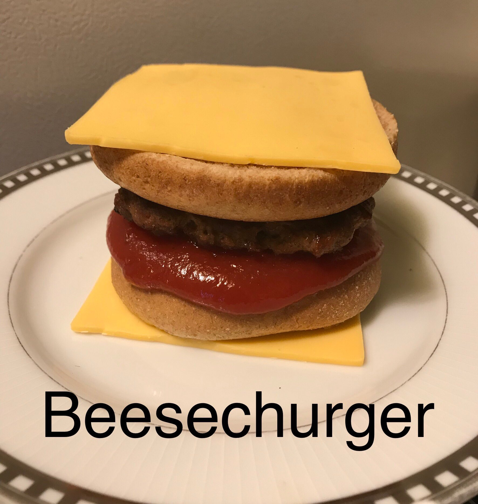

A burger for those who dare to go bold
Only the strongest will survive.
Ingredients
- 1lb of ground beef
- 2 slices of American cheese
- 1 set of upside down buns
- 1 cup tomato reduction
Recipe instructions
- Cook beef
- Toast buns
- Spread tomato reduction on bottom, upside down bun
- Place cooked beef between buns, on top of tomato reduction
- Wrap buns with two slices of cheese, using hand warmth to melt the cheese
Return to top
Return to main page